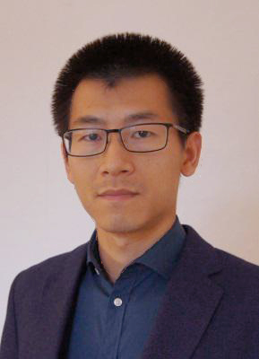

Guo, Xiaohui
Dr.rer.nat
- Email: xhguo86@hotmail.com
- Web: http://xhguo86.github.io
- Tel: +86(0)2151630702
Advisors: Prof. Dr. Susanne Wurst & Prof. Dr. Jana S. Petermann
Advisor: Prof. Dr. Jianqing Ding
Sponsoring Scientist: Dr. Ming Nie.
Freie Universität Berlin. Working group ‘Functional Biodiversity’ Sponsoring Scientist: Dr. Susanne Wurst
(2012-2016, Dahlem Centre of Plant Sciences, DE)
PI: Xiaohui Guo
(2012, Dahlem Centre of Plant Sciences, DE)
PI: Dr. Jana S. Petermann, Dr. Susanne Wurst, Dr. Ludo Muller; Co-worker: Xiaohui Guo
(2008-2010, Program Nr.: 2008BADBOB0504, CN)
PI: Dr. Jianqing Ding, Dr. Mingxun Ren, Co-worker: Xiaohui Guo
(2008-2010, Program Nr.: O754101H01, CN)
PI: Dr. Mingxun Ren; Co-worker: Xiaohui Guo
2011-2015 German Academic Exchange Service (DAAD) Scholarship (48 000€)
2010 Tri-Excellent Students Awards, University of Chinese Academy of Sciences
2008-2010 Academic scholarships of Wuhan Botanical Garden, Chinese Academy of Sciences (300€)
Guo, X.*, J.S. Petermann, and S. Wurst. 2017. Interaction of a root-knot nematode (Meloidogyne hapla) and plant intraspecific diversity in clover-grass communities. Journal of Plant Ecology. https://doi.org/10.1093/jpe/rtx057
Guo, X., M.X. Ren*, and J.Q. Ding. 2016. Do the introductions by botanical gardens facilitate the invasion of Solidago canadensis L. (Asterceae) in China? Weed Research 56: 442-451 http://onlinelibrary.wiley.com/doi/10.1111/wre.12227/full
Guo, X.*, J.S. Petermann, C. Schittko, and S. Wurst. 2016. Root-knot nematodes (Meloidogyne hapla) can modify the positive plant intraspecific diversity-productivity effect on red clover in clover-grass communities. Applied Soil Ecology. 102: 26-35 https://doi.org/10.1016/j.apsoil.2016.02.007
Guo, X.*, J.S. Petermann, C. Schittko, and S. Wurst. 2015. Independent role of belowground organisms and plant cultivar diversity in legume-grass communities. Applied Soil Ecology. 95: 1-8. https://doi.org/10.1016/j.apsoil.2015.05.010
Guo, W.F., X.Q. Li, X. Guo, and J.Q. Ding*. 2010. Effects of Rhinoncomimus latipes populations on the growth and reproduction of Persicaria perfoliata, an invasive plant in North America. Biocontrol Science and Technology. 21: 35-45 http://dx.doi.org/10.1080/09583157.2010.517604
Guo, X., M.X. Ren*, and J.Q. Ding. 2010. Plant species diversity and its seasonal dynamics in woodland invaded by Solidago canadensis (Asteraceae). Plant Science Journal (in Chinese). 29: 149-155
Wurst Group, Freie Universität Berlin, DE
Rillig Lab, Freie Universität Berlin
Kuzyakov Group, Georg-August-University of Goettingen, DE
Institute of Biodiversity Science, Fudan University, CN
Invasion and biological control lab, Chinese Academy of Sciences, CN
Pendall Group, Western Sydney University, AU